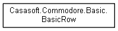
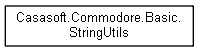
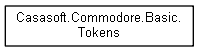
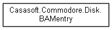
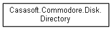

Commodore Tools
Class Hierarchy
Go to the textual class hierarchy





Generated by
1.8.16
Ove non diversamente specificato i contenuti del sito sono rilasciati con
licenza Creative Commons BY-NC-SA 4.0
Copyright
© 2019
The Strawberry Field
-
Roberto Ceccarelli


 1.8.16
1.8.16